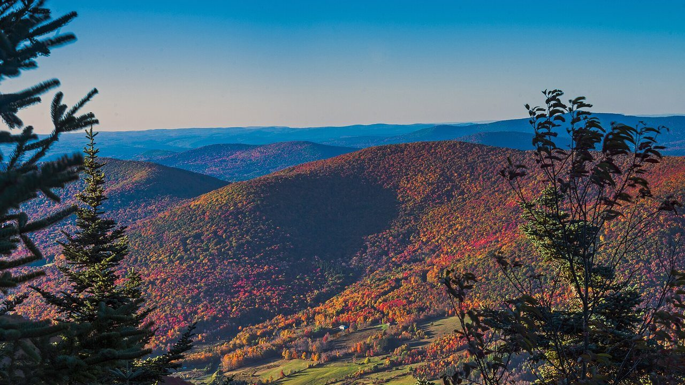

Race, Blue Ridge Parkway

Behind
Best +0:01
371W
Target 418 W-47 W
- Cadence
- 87rpm
- Heart
- 140bpm
- Speed
- 26.5km/h
Ride the real Bruges · Steenstraat to the Markt
Paste a Google Maps Platform key to stream it as photorealistic 3D Tiles. It stays on this device.
Recover7 of 13
0:47
Next: · 5:00 at level 21
-3.2%
195 m climbed
13.21 km
13
Resistance / 32
Solo races your best-time ghost: position reads Ahead or Behind, and solo alone gets a Pause button. Frozen at 30:13.